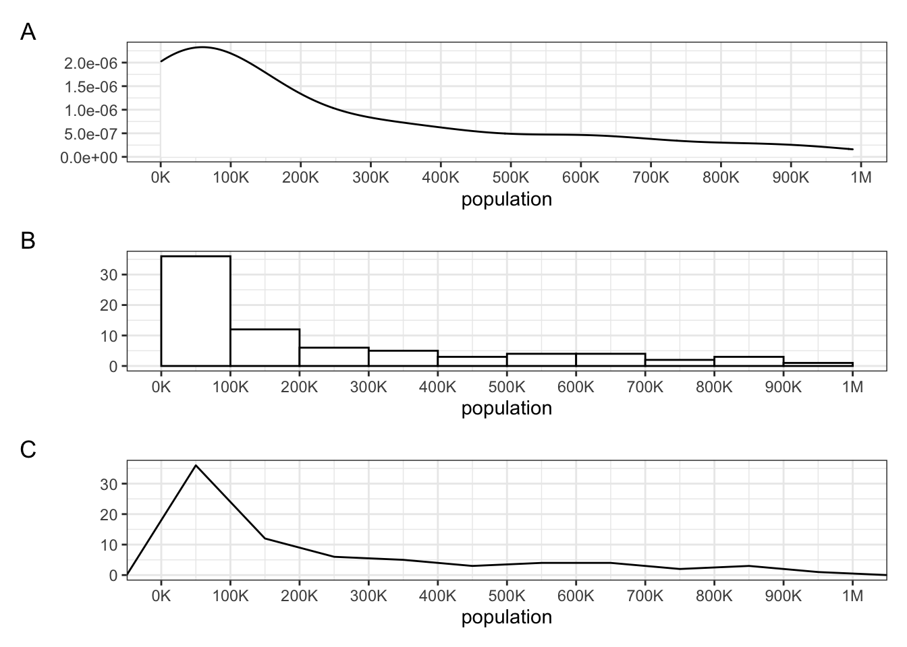
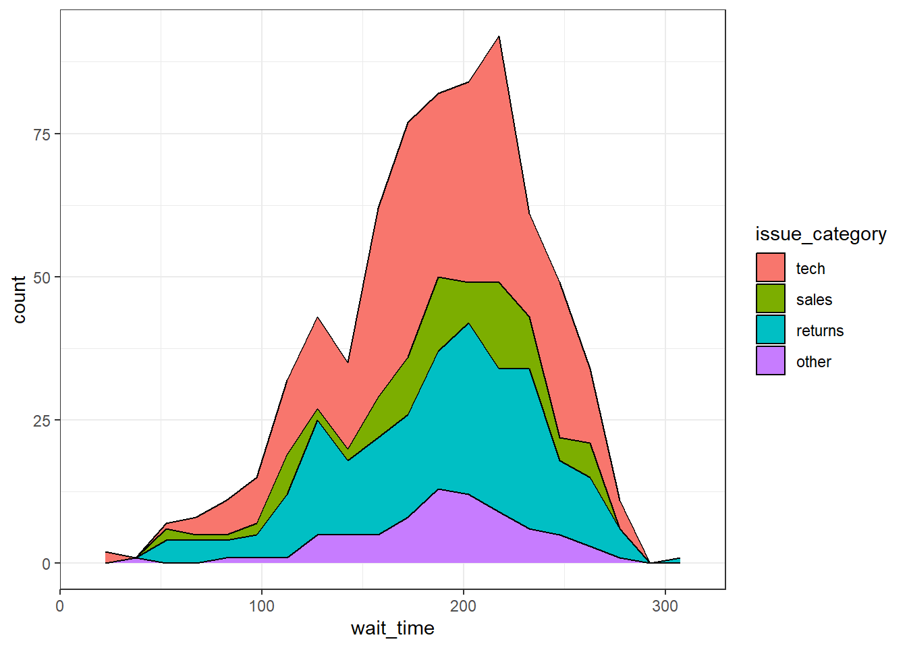
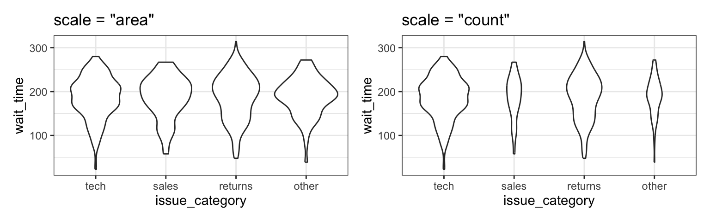
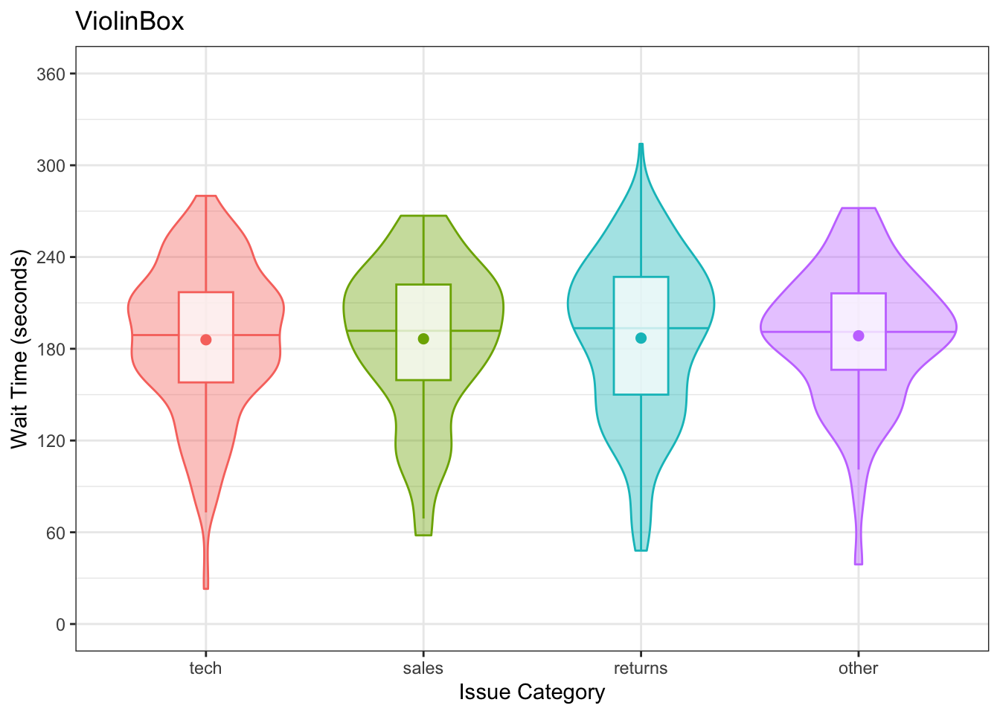
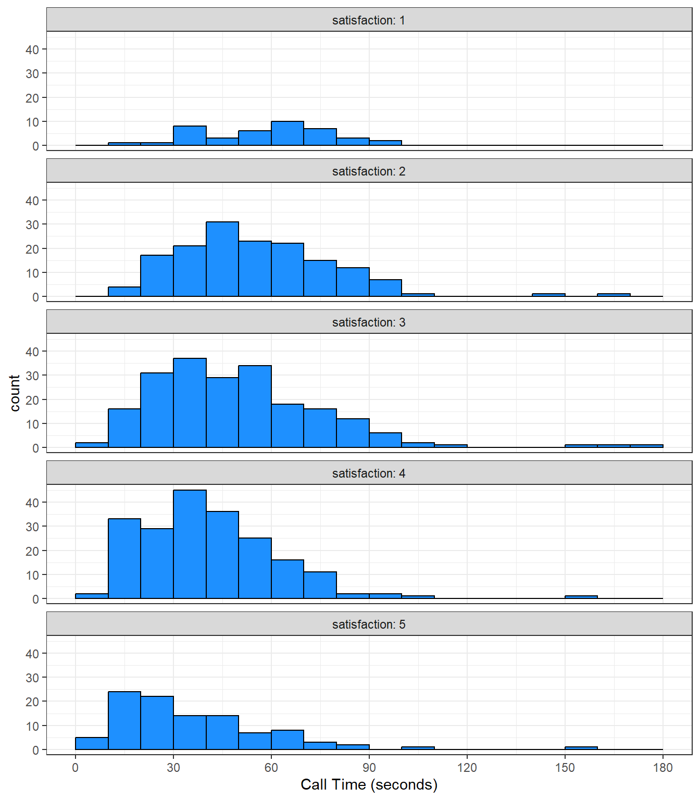

3 Data Visualisation
3.1 Intended Learning Outcomes
- Be able to identify categorical versus continuous data
- Be able to create plots in layers using ggplot
- Be able to choose appropriate plots for data
3.2 Walkthrough video
There is a walkthrough video of this chapter available via Echo360. Please note that there may have been minor edits to the book since the video was recorded. Where there are differences, the book should always take precedence.
3.3 Set-up
Create a new project for the work we’ll do in this chapter:
File > New Project...- Name the project
03-visualisation - Save it inside your ADS directory.
Then, create and save a new R Markdown document named plots.Rmd, get rid of the default template text, and load the packages in the set-up code chunk. You should have all of these packages installed already, but if you get the message Error in library(x) : there is no package called ‘x’, please refer to Section 1.6.1.
We’d recommend making a new code chunk for each different activity, and using the white space to make notes on any errors you make, things you find interesting, or questions you’d like to ask the course team.
Download the ggplot2 cheat sheet.
3.4 Variable types
If a spreadsheet is in a tidy data format, each row is an observation, each column is a variable, and the information in each cell is a value. We’ll learn more about how to get our data into this format in Chapter 8, but to get started we’ll use datasets with the right format.
For example, the table below lists pets owned by members of the psyTeachR team. Each row is an observation of one pet. There are 6 variables for each pet, their name, owner, species, birthdate, weight (in kg), and rating (on a 5-point scale from “very evil” to “very good”).
| name | owner | species | birthdate | weight | rating |
|---|---|---|---|---|---|
| Darwin | Lisa | ferret | 1998-04-02 | 1.2 | a little evil |
| Oy | Lisa | ferret | NA | 2.9 | very good |
| Khaleesi | Emily | cat | 2014-10-01 | 4.5 | very good |
| Bernie | Phil | dog | 2017-06-01 | 32.0 | very good |
Variables can be classified as continuous (numbers) or categorical (labels). When you’re plotting data, it’s important to know what kind of variables you have, which can help you decide what types of plots are most appropriate. Each variable also has a data type, such as numeric (numbers), character (text), or logical (TRUE/FALSE values). Some plots can only work on some data types. Make sure you have watched the mini-lecture on types of data from last week before you work through this chapter. Additionally, Appendix F has more details, as this concept will be relevant repeatedly.

3.4.1 Continuous
Continuous variables are properties you can measure, like weight. You can use continuous variables in mathematical operations, like calculating the sum total of a column of prices or the average number of social media likes per day. They may be rounded to the nearest whole number, but it should make sense to have a measurement halfway between.
Continuous variables always have a numeric data type. They are either integers like 42 or doubles like 3.14159.
3.4.2 Categorical
Categorical variables are properties you can count, like the species of pet. Categorical variables can be nominal, where the categories don’t really have an order, like cats, dogs and ferrets (even though ferrets are obviously best), or ordinal, where they have a clear order but the distance between the categories isn’t something you could exactly equate, like points on a Likert rating scale. Even if a data table uses numbers like 1-7 to represent ordinal variables, you shouldn’t treat them like continuous variables.
Categorical data can have a character data type, also called strings. These are made by putting text inside of quotes. That text can be letters, punctuation, or even numbers. For example, “January” is a character string, but so is “1” if you put it in quotes. The character data type is best for variables that can have a lot of different values that you can’t predict ahead of time.
Categorical data can also be factors, a specific type of integer that lets you specify the category names and their order. This is useful for making plots display with categories in the order you want (otherwise they default to alphabetical order). The factor data type is best for categories that have a specific number of levels.
Sometimes people represent categorical variables with numbers that correspond to names, like 0 = “no” and 1 = “yes”, but values in between don’t have a clear interpretation. If you have control over how the data are recorded, it’s better to use the character names for clarity. You’ll learn how to recode columns in Chapter 9.
3.4.3 Dates and times
Dates and times are a special case of variable. They can act like categorical or continuous variables, and there are special ways to plot them. Dates and times can be hard to work with, but the lubridate package provides functions to help you with this.
3.4.4 Test your understanding
Coming back to the pets dataset, what type of variable is in each column? You can use the function glimpse() to show a list of the column names, their data types, and the first few values in each column - here is the output of running glimpse() on the pets dataset.
Rows: 4
Columns: 6
$ name <chr> "Darwin", "Oy", "Khaleesi", "Bernie"
$ owner <chr> "Lisa", "Lisa", "Emily", "Phil"
$ species <fct> ferret, ferret, cat, dog
$ birthdate <date> 1998-04-02, NA, 2014-10-01, 2017-06-01
$ weight <dbl> 1.2, 2.9, 4.5, 32.0
$ rating <fct> a little evil, very good, very good, very good| Column | Variable type | Data type |
|---|---|---|
name |
||
owner |
||
species |
||
birthdate |
||
weight |
||
rating |
3.5 Building plots
There are multiple approaches to data visualisation in R; in this course we will use the popular package ggplot2, which is part of the larger tidyverse collection of packages. A grammar of graphics (the “gg” in “ggplot”) is a standardised way to describe the components of a graphic. ggplot2 uses a layered grammar of graphics, in which plots are built up in a series of layers. It may be helpful to think about any picture as having multiple elements that sit semi-transparently over each other. A good analogy is old Disney movies where artists would create a background and then add moveable elements on top of the background via transparencies.
- displays the evolution of a simple scatterplot using this layered approach. First, the plot space is built (layer 1); the variables are specified (layer 2); the type of visualisation (known as a
geom) that is desired for these variables is specified (layer 3) - in this casegeom_point()is called to visualise individual data points; a second geom is added to include a line of best fit (layer 4), the axis labels are edited for readability (layer 5), and finally, a theme is applied to change the overall appearance of the plot (layer 6).

Importantly, each layer is independent and independently customisable. For example, the size, colour and position of each component can be adjusted, or one could, for example, remove the first geom (the data points) to only visualise the line of best fit, simply by removing the layer that draws the data points (Figure 3.1). The use of layers makes it easy to build up complex plots step-by-step, and to adapt or extend plots from existing code.

3.5.1 Plot Data
Let’s build up the plot above, layer by layer. First we need to get the data. We’ll learn how to load data from different sources in Chapter 4, but this time we’ll use the same method as we did in Section 2.5.1 and load it from an online source.
When you load the data, read_csv() will produce a message that gives you information about the data it has imported and what assumptions it has made. The “column specification” tells you what each column is named and what type of data R has categorised each variable as. The abbreviation “chr” is for character columns, “dbl” is for double columns, and “dttm” is a date/time column.
Rows: 707 Columns: 7
── Column specification ────────────────────────────────────────────────────────
Delimiter: ","
chr (3): caller_id, employee_id, issue_category
dbl (3): wait_time, call_time, satisfaction
dttm (1): call_start
ℹ Use `spec()` to retrieve the full column specification for this data.
ℹ Specify the column types or set `show_col_types = FALSE` to quiet this message.This data is simulated data for a call centre customer satisfaction survey. The first thing you should do when you need to plot data is to get familiar with what all of the rows (observations) and columns (variables) mean. Sometimes this is obvious, and sometimes it requires help from the data provider. Here, each row represents one call to the centre.
-
caller_idis a unique ID for each caller -
employee_idis a unique ID for each employee taking calls -
call_startis the date and time that the call arrived -
wait_timeis the number of seconds the caller had to wait -
call_timeis the number of seconds the call lasted after the employee picked up -
issue_categoryis whether the issue was tech, sales, returns, or other -
satisfactionis the customer satisfaction rating on a scale from 1 (very unsatisfied) to 5 (very satisfied)
Unless you specify the column types, data importing functions will just guess the types and usually default to double for columns with numbers and character for columns with letters. Use the function spec() to find out all of the column types and edit them if needed.
cols(
caller_id = col_character(),
employee_id = col_character(),
call_start = col_datetime(format = ""),
wait_time = col_double(),
call_time = col_double(),
issue_category = col_character(),
satisfaction = col_double()
)Let’s set issue_category as a factor and set the order of the levels. By default, R will order the levels of a factor alphanumerically, however in many cases you will want or need to set your own order. For example, in this data, it makes most sense for the category “other” to come at the end of the list. After you update the column types, you have to re-import the data by adjusting the read_csv() code to set the col_types argument to the new column types.
Note that because read_csv() is going to use the object survey_col_types, you must create survey_col_types before you run the adjusted read_csv() code. If you ever need to adjust your code, try to think about the order that the code will run in if you start from scratch and make sure it’s organised appropriately.
# updated column types
survey_col_types <- cols(
caller_id = col_character(),
employee_id = col_character(),
call_start = col_datetime(format = ""),
wait_time = col_double(),
call_time = col_double(),
issue_category = col_factor(levels = c("tech", "sales", "returns", "other")),
satisfaction = col_integer()
)
# re-import data with correct column types
survey_data <- read_csv("https://psyteachr.github.io/ads-v1/data/survey_data.csv",
col_types = survey_col_types)3.5.2 Plot setup
3.5.2.1 Default theme
Plots in this book use the black-and-white theme, not the default grey theme, so set your default theme to the same so your plots will look like the examples below. At the top of your script, in the setup chunk after you’ve loaded the tidyverse package, add the following code and run it. You’ll learn more ways to customise your theme in Section 3.5.3.4 and Section H.3.
3.5.2.2 Data
Every plot starts with the ggplot() function and a data table. If your data are not loaded or you have a typo in your code, this will give you an error message. It’s best to check your plot after each step, so that you can figure out where errors are more easily.

3.5.2.3 Mapping
The next argument to ggplot() is the mapping. This tells the plot which columns in the data should be represented by, or “mapped” to, different aspects of the plot, such as the x-axis, y-axis, line colour, object fill, or line style. These aspects, or “aesthetics”, are listing inside the aes() function.
Set the arguments x and y to the names of the columns you want to be plotted on those axes. Here, we want to plot the wait time on the x-axis and the call time on the y-axis.
# set up the plot with mapping
ggplot(
data = survey_data,
mapping = aes(x = wait_time, y = call_time)
)
In the example above, we wrote out the names of the arguments data and mapping, but in practice, almost everyone omits them. Just make sure you put the data and mapping in the right order.
3.5.2.4 Geoms
Now we can add our plot elements in layers. These are referred to as geoms and their functions start with geom_. You add layers onto the base plot created by ggplot() with a plus (+).

Somewhat annoyingly, the plus has to be on the end of the previous line, not at the start of the next line. If you do make this mistake, it will run the first line of code to produce the base layer but then you will get the following error message rather than adding on geom_point().

3.5.2.5 Multiple geoms
Part of the power of ggplot2 is that you can add more than one geom to a plot by adding on extra layers and so it quickly becomes possible to make complex and informative visualisation. Importantly, the layers display in the order you set them up. The code below uses the same geoms to produce a scatterplot with a line of best fit but orders them differently.

3.5.2.6 Saving plots
Just like you can save numbers and data tables to objects, you can also save the output of ggplot(). The code below produces the same plots we created above but saves them to objects named point_first and line_first. If you run this code, the plots won’t display like they have done before. Instead, you’ll see the object names appear in the environment pane.
To view the plots, call the objects by name. This will output each plot separately.
3.5.2.7 Combining plots
One of the reasons to save your plots to objects is so that you can combine multiple plots using functions from the patchwork package. The below code produces the above plot by combining the two plots with + and then specifying that we want the plots produced on a single row with the nrow argument in plot_layout().

3.5.3 Customising plots
3.5.3.1 Styling geoms
We should definitely put the line in front of the points, but the points are still a bit dark. If you want to change the overall style of a geom, you can set the arguments colour, alpha, shape, size and linetype inside the geom function. There are many different values that you can set these to; Appendix H) gives details of these. Play around with different values below and figure out what the default values are for shape and size.
ggplot(survey_data, aes(x = wait_time, y = call_time)) +
geom_point(colour = "dodgerblue",
alpha = 0.2, # 20% transparency
shape = 18, # solid diamond
size = 2) +
geom_smooth(method = lm,
formula = y~x, # formula used to draw line,
# setting the default formula avoids an annoying message
colour = rgb(0, .5, .8),
linetype = 3) 
This method is only for changing the style of all the shapes made with that geom. If you want, for example, points to have different colours depending on which issue category they are from, you set the argument colour = issue_category inside the aes() function for the mapping. You can customise the colours used with scale_ functions, which you will learn about below and in Appendix H).
3.5.3.2 Format axes
Now we need to make the axes look neater. There are several functions you can use to change the axis labels, but the most powerful ones are the scale_ functions. You need to use a scale function that matches the data you’re plotting on that axis and this is where it becomes particularly important to know what type of data you’re working with. Both of the axes here are continuous, so we’ll use scale_x_continuous() and scale_y_continuous().
The name argument changes the axis label. The breaks argument sets the major units and needs a vector of possible values, which can extend beyond the range of the data (e.g., wait time only goes up to 350, but we can specify breaks up to 600 to make the maths easier). The seq() function creates a sequence of numbers from one to another by specified steps.
ggplot(survey_data, aes(x = wait_time, y = call_time)) +
geom_point(colour = "dodgerblue",
alpha = 0.2) +
geom_smooth(method = lm,
formula = y~x,
colour = rgb(0, .5, .8)) +
scale_x_continuous(name = "Wait Time (seconds)",
breaks = seq(from = 0, to = 600, by = 60)) +
scale_y_continuous(name = "Call time (seconds)",
breaks = seq(from = 0, to = 600, by = 30))
Check the help for ?scale_x_continuous to see how you would set the minor units or specify how many breaks you want instead.
3.5.3.3 Axis limits
If you want to change the minimum and maximum values on an axis, use the coord_cartesian() function. Many plots make more sense if the minimum and maximum values represent the range of possible values, even if those values aren’t present in the data. Here, wait and call times can’t be less than 0 seconds, so we’ll set the minimum values to 0 and the maximum values to the first break above the highest value.
ggplot(survey_data, aes(x = wait_time, y = call_time)) +
geom_point(colour = "dodgerblue",
alpha = 0.2) +
geom_smooth(method = lm,
formula = y~x,
colour = rgb(0, .5, .8)) +
scale_x_continuous(name = "Wait Time (seconds)",
breaks = seq(from = 0, to = 600, by = 60)) +
scale_y_continuous(name = "Call time (seconds)",
breaks = seq(from = 0, to = 600, by = 30)) +
coord_cartesian(xlim = c(0, 360),
ylim = c(0, 180))
You can also set the limits argument inside the scale_ functions, but this actually removes any data that falls outside these limits, rather than cropping your plot, and this can change the appearance of certain types of plots like violin plots and density plots.
3.5.3.4 Themes
ggplot2 comes with several built-in themes, such as theme_minimal() and theme_bw(), but the ggthemes package provides even more themes to match different software, such as GoogleDocs or Stata, or publications, such as the Economist or the Wall Street Journal. Let’s add the GoogleDocs theme, but change the font size to 20 with the base_size argument.
It’s also worth highlighting that this code is starting to look quite complicated because of the number of layers, but because we’ve built it up slowly it should (hopefully!) make sense. If you see examples of ggplot2 code online that you’d like to adapt, build the plot up layer by layer and it will make it easier to understand what each layer adds.
ggplot(survey_data, aes(x = wait_time, y = call_time)) +
geom_point(colour = "dodgerblue",
alpha = 0.2) +
geom_smooth(method = lm,
formula = y~x,
colour = rgb(0, .5, .8)) +
scale_x_continuous(name = "Wait Time (seconds)",
breaks = seq(from = 0, to = 600, by = 60)) +
scale_y_continuous(name = "Call time (seconds)",
breaks = seq(from = 0, to = 600, by = 30)) +
coord_cartesian(xlim = c(0, 360),
ylim = c(0, 180)) +
ggthemes::theme_gdocs(base_size = 20)
3.5.3.5 Theme tweaks
If you’re still not quite happy with a theme, you can customise it even further with the themes() function. Check the help for this function to see all of the possible options. The most common thing you’ll want to do is to remove an element entirely. You do this by setting the relevant argument to element_blank(). Below, we’re getting rid of the x-axis line and the plot background, which removes the line around the plot.
ggplot(survey_data, aes(x = wait_time, y = call_time)) +
geom_point(colour = "dodgerblue",
alpha = 0.2) +
geom_smooth(method = lm,
formula = y~x,
colour = rgb(0, .5, .8)) +
scale_x_continuous(name = "Wait Time (seconds)",
breaks = x_breaks) +
scale_y_continuous(name = "Call time (seconds)",
breaks = y_breaks) +
coord_cartesian(xlim = c(0, 360),
ylim = c(0, 180)) +
theme_gdocs(base_size = 11) +
theme(axis.line.x = element_blank(),
plot.background = element_blank())
3.6 Appropriate plots
Now that you know how to build up a plot by layers and customise its appearance, you’re ready to learn about some more plot types. Different types of data require different types of plots, so this section is organised by data type.
The ggplot2 cheat sheet is a great resource to help you find plots appropriate to your data, based on how many variables you’re plotting and what type they are. The examples below all use the same customer satisfaction data, but each plot communicates something different.
We don’t expect you to memorise all of the plot types or the methods for customising them, but it will be helpful to try out the code in the examples below for yourself, changing values to test your understanding.
3.6.1 Counting categories
3.6.1.1 Bar plot
If you want to count the number of things per category, you can use geom_bar(). You only need to provide a x mapping to geom_bar() because by default geom_bar() uses the number of observations in each group of x and the value for y, so you don’t need to tell it what to put on the y-axis.

You probably want to customise some things, like the colours, order of the columns, and their labels. Inspect the code below and try running it layer by layer to figure out where these things change. The functions scale_fill_manual() and scale_x_discrete() are new, but work in the same way as the other scale_ functions. You’ll learn more about this in Section 10.3.
ggplot(survey_data, aes(x = issue_category,
fill = issue_category)) +
geom_bar() +
scale_x_discrete(
# change axis title
name = "Issue Category",
# change order
limits = c("tech", "returns", "sales", "other"),
# change labels
labels = c("Technical", "Returns", "Sales", "Other")
) +
scale_fill_manual(
# change colours
values = c(tech = "goldenrod",
returns = "darkgreen",
sales = "dodgerblue3",
other = "purple3"),
# remove the legend
guide = "none"
) +
scale_y_continuous(
name = "", # remove axis title
# remove the space above and below the y-axis
expand = expansion(add = 0)
) +
# minimum = 0, maximum = 350
coord_cartesian(ylim = c(0, 350)) +
ggtitle("Number of issues per category") # add a title
3.6.1.2 Column plot
If your data already have a column with the number you want to plot, you can use geom_col() to plot it. We can use the count() function to make a table with a row for each issue_category and a column called n with the number of observations in that category.
| issue_category | n |
|---|---|
| tech | 311 |
| sales | 88 |
| returns | 232 |
| other | 76 |
The mapping for geom_col() requires you to set both the x and y aesthetics. Set y = n because we want to plot the number of issues in each category, and that information is in the column called n.

3.6.1.3 Pie chart
Pie charts are a misleading form of data visualisation, so we won’t cover them. We’ll cover options for visualising proportions, like waffle, lollipop and treemap plots, in Section 10.3.4).
3.6.1.4 Test your understanding
Here is a small data table.
| country | population | island |
|---|---|---|
| Northern Ireland | 1,895,510 | Ireland |
| Wales | 3,169,586 | Great Britain |
| Republic of Ireland | 4,937,786 | Ireland |
| Scotland | 5,466,000 | Great Britain |
| England | 56,550,138 | Great Britain |
- What geom would you use to plot the population for each of the 5 countries?
- What mapping would you use?
- What geom would you use to plot the number of countries on each island?
- What mapping would you use?
3.6.2 One continuous variable
If you have a continuous variable, like the number of seconds callers have to wait, you can use geom_histogram() or geom_density() to show the distribution. Just like geom_bar() you are only required to specify the x variable.
3.6.2.1 Histogram
A histogram splits the data into “bins” along the x-axis and shows the count of how many observations are in each bin along the y-axis.
`stat_bin()` using `bins = 30`. Pick better value with `binwidth`.
You should always set the binwidth or number of bins to something meaningful for your data (otherwise you get an annoying message). You might need to try a few options before you find something that looks good and conveys the meaning of your plot – try changing the values of binwidth and bins below to see what works best.
By default, the bars start centered on 0, so if binwidth is set to 15, the first bar would include -7.5 to 7.5 seconds, which doesn’t make much sense. We can set boundary = 0 so that each bar represents increments of 15 seconds starting from 0.

Finally, the default style of grey bars is ugly, so you can change that by setting the fill and colour, as well as using scale_x_continuous() to update the axis labels.

3.6.2.2 Frequency plot
Rather than plotting each bin as a bar, you can connect a line across the top of each bin using a frequency plot. The function geom_freqpoly() works the same as geom_histogram(), except it can’t take a fill argument because it’s just a line.

3.6.2.3 Density plot
If the distribution is smooth, a density plot is often a better way to show the distribution. A density plot doesn’t need the binwidth or boundary arguments because it doesn’t split the data into bins, but it can have fill.
3.6.2.4 Test your understanding
Imagine you have a table of the population for each country in the world with the columns country and population. We’ll just look at the 76 countries with populations of less than a million.

- What kind of plot is A?
- What kind of plot is B?
- What kind of plot is C?
- How would you set the mapping for these plots?
- What is the
binwidthof the histogram?
3.6.3 Grouped continuous variables
There are several ways to compare continuous data across groups. Which you choose depends on what point you are trying to make with the plot.
3.6.3.1 Subdividing distributions
In previous plots, we have used fill purely for visual reasons, e.g., we have changed the colour of the histogram bars to make them look nicer. However, you can also use fill to represent another variable so that the colours become meaningful.
Setting the fill aesthetic in the mapping will produce different coloured bars for each category of the fill variable, in this case issue_category.
ggplot(survey_data, aes(x = wait_time, fill = issue_category)) +
geom_histogram(boundary = 0,
binwidth = 15,
color = "black")
When you set an aspect to represent the data, you do this inside the aes() function for the mapping, not as an argument to the geom. If you try to set this in a geom, you’ll get the following error (unless you coincidentally have an object named issue_category that is a colour word).
By default, the categories are positioned stacked on top of each other. The function geom_area() gives a similar effect when stat = "bin".
3.6.3.2 Comparing distributions
If you want to compare more than one distribution, you can set the position argument of geom_histogram() to “dodge” to put the bars for each group next to each other instead of stacking them. However, this can look confusing with several categories. Instead, usegeom_freqpoly() to plot a line connecting the top of each bin.
# dodged histogram
histogram_dodge <-
ggplot(survey_data, aes(x = wait_time,
fill = issue_category,
colour = issue_category))+
geom_histogram(boundary = 0,
binwidth = 15,
position = "dodge") +
scale_x_continuous(name = "Wait time (seconds)",
breaks = seq(0, 600, 60)) +
ggtitle("Dodged Histogram")
# frequency plot
freqpoly_plot <-
ggplot(survey_data, aes(x = wait_time,
fill = issue_category,
colour = issue_category)) +
geom_freqpoly(binwidth = 15,
boundary = 0,
size = 1) +
scale_x_continuous(name = "Wait time (seconds)",
breaks = seq(0, 600, 60)) +
ggtitle("Frequency")
# put plots together
histogram_dodge + freqpoly_plot +
plot_layout(nrow = 1, guides = "collect") # collects the legends together, try removing this
3.6.3.3 Violin plot
Another way to compare groups of continuous variables is the violin plot. This is like a density plot, but rotated 90 degrees and mirrored - the fatter the violin, the larger proportion of data points there are at that value.
violin_area <-
ggplot(survey_data, aes(x = issue_category, y = wait_time)) +
geom_violin() +
ggtitle('scale = "area"')
violin_count <-
ggplot(survey_data, aes(x = issue_category, y = wait_time)) +
geom_violin(scale = "count") +
ggtitle('scale = "count"')
violin_area + violin_count
3.6.3.4 Boxplot
Boxplots serve a similar purpose to violin plots (without the giggles from the back row). They don’t show you the shape of the distribution, but rather some statistics about it. The middle line represents the median; half the data are above this line and half below it. The box encloses the 25th to 75th percentiles of the data, so 50% of the data falls inside the box. The “whiskers” extending above and below the box extend 1.5 times the height of the box, although you can change this with the coef argument. The points show outliers – individual data points that fall outside of this range.

3.6.3.5 Combo plots
Violin plots are frequently layered with other geoms that represent the mean or median values in the data. This is a lot of code, to help your understanding a) run it layer by layer to see how it builds up and b) change the values throughout the code
# add fill and colour to the mapping
ggplot(survey_data, aes(x = issue_category,
y = wait_time,
fill = issue_category,
colour = issue_category)) +
scale_x_discrete(name = "Issue Category") +
scale_y_continuous(name = "Wait Time (seconds)",
breaks = seq(0, 600, 60)) +
coord_cartesian(ylim = c(0, 360)) +
guides(fill = "none", colour = "none") +
# add a line at median (50%) score
geom_violin(alpha = 0.4,
draw_quantiles = 0.5) +
# add a boxplot
geom_boxplot(width = 0.25,
fill = "white",
alpha = 0.75,
outlier.alpha = 0) +
# add a point that represents the mean
stat_summary(fun = mean,
geom = "point",
size = 2) +
ggtitle("ViolinBox")
A very common type of plot is to produce a bar chart of means, however, the example below demonstrates just how misleading this is. It communicates the mean value for each category, but the bars hide the distribution of the actual data. You can’t tell if most wait times are close to 3 minutes, or spread from 0 to 6 minutes, or if the vast majority are less than 2 minutes, but the mean is pulled up by some very high outliers.

Column plots can also be very misleading. The plot on the left starts the y-axis at 0, which makes the bar heights proportional, showing almost no difference in average wait times. Since the differences are hard to see, you may be tempted to start the y-axis higher, but that makes it look like the average wait time for returns is double that for tech.
3.6.3.6 Test your understanding

- How would you create plot A?
- How would you create plot B?
- What does the mapping look like for both plots?
- Which employee tends to have the longest calls?
- Which employee has the record longest call?
3.6.4 Two continuous variables
When you want to see how two continuous variables are related, set one as the x-axis and the other as the y-axis. Usually, if one variable causes the other, you plot the cause on the x-axis and the effect on the y-axis. Here, we want to see if longer wait times cause the calls to be longer.
3.6.4.1 Scatterplot
The function to create a scatterplot is called geom_point().

3.6.4.2 Trendlines
In 1, we emphasised the relationship between wait time and call time with a trendline created by geom_smooth() using the argument method = lm (“lm” stands for “linear model” or a straight line relationship). You can also set method = loess to visualise a non-linear relationship.
lm_plot <-
ggplot(survey_data, aes(x = wait_time, y = call_time)) +
geom_point(alpha = 0.2) +
geom_smooth(method = lm, formula = y~x) +
ggtitle("method = lm")
loess_plot <-
ggplot(survey_data, aes(x = wait_time, y = call_time)) +
geom_point(alpha = 0.2) +
geom_smooth(method = loess, formula = y~x) +
ggtitle("method = loess")
lm_plot + loess_plot
If there isn’t much data at the extremes of the x-axis, the curve can be very uncertain. This is represented by the wider shaded area, which means that the true relationship might be anywhere within that area. Add the argument se = FALSE to geom_smooth() to remove this “standard error” shading.
3.6.4.3 Dates
The call_start column contains both a date and a time, so use the date() function from lubridate to convert it to just a date. We’ll need it in this format to be able to transform the x-axis below.
ggplot(survey_data, aes(x = lubridate::date(call_start),
y = satisfaction)) +
geom_smooth(method = lm, formula = y~x)
We can use scale_x_date() to set the date_breaks to be “1 month” apart. The date_labels argument uses a code for different date formats; you can see the full list of possibilities in the help for ?strptime. For example, %b means “Abbreviated month name”, whilst if you wanted to use a format like “2020/01/31” you could try "%Y/%m/%d".
ggplot(survey_data, aes(x = lubridate::date(call_start),
y = satisfaction)) +
geom_smooth(method = lm, formula = y~x) +
scale_x_date(name = "",
date_breaks = "1 month",
date_labels = "%b") +
scale_y_continuous(name = "Caller Satisfaction") +
ggtitle("2020 Caller Satisfaction")It looks like customer satisfaction declined across the year, but is this change meaningful? See what the plot looks like when the y-axis spans the full range of possible satisfaction values from 1 to 5. You can also plot the individual data points to emphasise the range of values.
ggplot(survey_data, aes(x = lubridate::date(call_start),
y = satisfaction)) +
# show individual data, jitter the height to avoid overlap
geom_jitter(width = 0, height = .1, alpha = 0.2) +
geom_smooth(method = lm, formula = y~x) +
scale_x_date(name = "",
date_breaks = "1 month",
date_labels = "%b") +
scale_y_continuous(name = "Caller Satisfaction",
breaks = 1:5) +
coord_cartesian(ylim = c(1, 5)) + # changes limits
ggtitle("2020 Caller Satisfaction")3.6.5 Ordinal variables
When you have a limited range of numeric values, such as an ordinal rating scale, sometimes overlapping data makes it difficult to see what is going on in a point plot. For example, the plot below shows satisfaction ratings by call time but because all the ratings are 1, 2, 3, 4 or 5, it makes it hard to see exactly how many data points there are at each point.
In this section, we’ll explore a few options for dealing with this.

3.6.5.1 Jitter plot
You can use geom_jitter() to move the points around a bit to make them easier to see. You can also set alpha transparency. Here, the x-axis is continuous, so there is no need to jitter the width, but the y-axis is ordinal categories, so the height is jittered between -0.2 and +0.2 away from the true y-value. It can help to play around with these values to understand what the jitter is doing.
3.6.5.2 Facets
Alternatively, you can use facet_wrap() to create a separate plot for each level of satisfaction. facet_wrap() uses the tilde (~) symbol, which you can roughly translate as “by”, e.g., facet the plot by satisfaction rating. The labeller function controls the labels above each plot. label_both specifies that we want both the variable name (satisfaction) and the value (e.g., 1) printed on the plot to make it easier to read.
ggplot(survey_data, aes(x = call_time)) +
geom_histogram(binwidth = 10,
boundary = 0,
fill = "dodgerblue",
color = "black") +
facet_wrap(~satisfaction,
ncol = 1, # try changing this to 2
labeller = label_both) +
scale_x_continuous(name = "Call Time (seconds)",
breaks = seq(0, 600, 30))
These are not, by any means, all the plot types that you can make in R. This chapter just gave you a basic overview, and we will go into more detail in Section 10.3). The further resources section at the end of this chapter lists many resources, but the R Graph Gallery is an especially useful one to get inspiration for the kinds of beautiful plots you can make in R.
3.7 Exercises
For the final step in this chapter, we will create a report of data visualisations. You may need to refer back to Chapter 2) to help you complete these exercises and you may also want to take a break before you work through this section. We’d also recommend you knit at every step so that you can see how your output changes.
3.7.1 New Markdown
Create and save a new R Markdown document named plots_report.Rmd and give it the title “Customer satisfaction report”. Remove the default template text and then load the packages and code below in the set-up code chunk:
3.7.2 Summary
Create a level 1 heading titled “Overview”. Underneath this heading, write a short summary of what the data set contains and what each of the variables means (you can use the information from Section 3.5.1 if you like).
3.7.3 Presenting plots
Pick your two favourites plots from all the examples we’ve made in this chapter. For each plot:
- Create a level 2 heading in your R Markdown document and give it an informative title.
- Write a short summary that interprets the data shown in the plots - it’s not enough just to present visualisations, effective reports will also help the reader understand the conclusions they should draw from the plots you’ve presented.
- Look through the different themes available with ggtheme and choose one to apply to your plots.
- Make sure each plot has a figure caption (either by adding this to the
ggplot()code or adding it to the code chunk options). - Organise your Markdown so that the plots are shown after the text summary.
3.7.4 Combining plots
Now, pick your two least favourite plots:
- Adjust the visual aesthetics to make them look as bad and as difficult to read as possible.
- Combine the plots using patchwork functions.
- Write a short summary that explains why you think these plots are so bad.
- Organise your Markdown so that the plots are shown after the text summary.
3.7.5 Editing your Markdown display
Adjust the set-up of your Markdown so that your knitted report does not show any code, messages, or warnings, and all figures are 8 x 5 (see Section 2.7.1).
3.7.6 Change the output
So far we’ve just knitted to html. To generate PDF reports, you need to install tinytex (Xie, 2021) and run the following code in the console (do not add this to your Rmd file):
Once you’ve done this, update your YAML heading to include the following:
---
title: "Customer Satisfaction Report"
author: "Your name"
output:
pdf_document:
---This will knit a PDF document. You will likely encounter errors - knitting to pdf really is the seventh circle of hell. If this happens, ask on Teams for help.
As an alternative, you can also knit to a Word document.
---
title: "Customer Satisfaction Report"
author: "Your name"
output:
word_document:
---3.8 Glossary
| term | definition |
|---|---|
| argument | A variable that provides input to a function. |
| categorical | Data that can only take certain values, such as types of pet. |
| character | A data type representing strings of text. |
| chunk | A section of code in an R Markdown file |
| continuous | Data that can take on any values between other existing values. |
| data type | The kind of data represented by an object. |
| default value | A value that a function uses for an argument if it is skipped. |
| double | A data type representing a real decimal number |
| factor | A data type where a specific set of values are stored with labels; An explanatory variable manipulated by the experimenter |
| geom | The geometric style in which data are displayed, such as boxplot, density, or histogram. |
| integer | A data type representing whole numbers. |
| knit | To create an HTML, PDF, or Word document from an R Markdown (Rmd) document |
| likert | A rating scale with a small number of discrete points in order |
| logical | A data type representing TRUE or FALSE values. |
| median | The middle number in a distribution where half of the values are larger and half are smaller. |
| nominal | Categorical variables that don't have an inherent order, such as types of animal. |
| numeric | A data type representing a real decimal number or integer. |
| observation | All of the data about a single trial or question. |
| ordinal | Discrete variables that have an inherent order, such as level of education or dislike/like. |
| outlier | A data point that is extremely distant from most of the other data points |
| r markdown | The R-specific version of markdown: a way to specify formatting, such as headers, paragraphs, lists, bolding, and links, as well as code blocks and inline code. |
| string | A piece of text inside of quotes. |
| tidy data | A format for data that maps the meaning onto the structure. |
| value | A single number or piece of data. |
| variable | (coding): A word that identifies and stores the value of some data for later use; (stats): An attribute or characteristic of an observation that you can measure, count, or describe |
| vector | A type of data structure that collects values with the same data type, like T/F values, numbers, or strings. |
3.9 Further Resources
- ggplot2 cheat sheet
- Data visualisation using R, for researchers who don’t use R (Nordmann et al., 2021)
- Chapter 3: Data Visualisation of R for Data Science
- ggplot2 FAQs
- ggplot2 documentation
- Hack Your Data Beautiful workshop by University of Glasgow postgraduate students
- Chapter 28: Graphics for communication of R for Data Science
- gganimate: A package for making animated plots